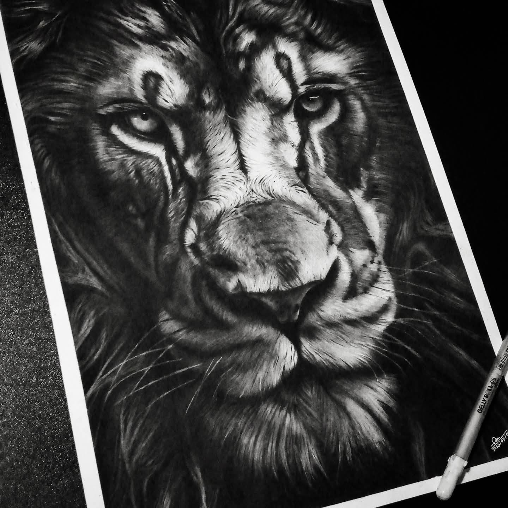
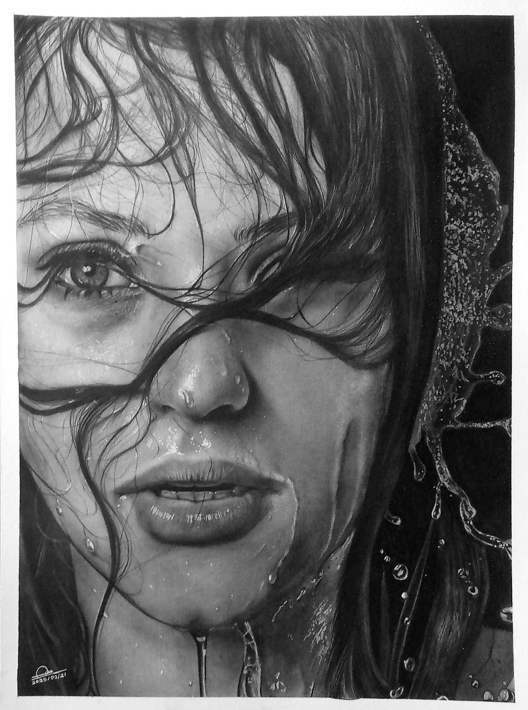
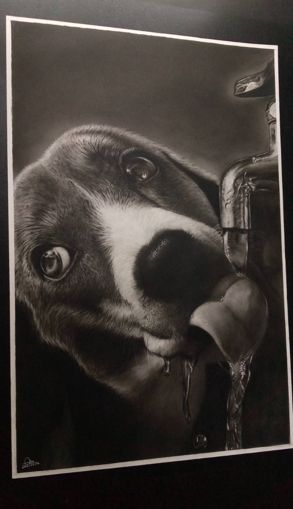

Hi, I'm Asanka Dilshan, a passionate charcoal portrait artist with 5 years of experience in creating detailed and lifelike artworks. My specialty is hyperrealistic charcoal portraits, where I focus on capturing not only the physical appearance of a person but also their unique emotions, personality, and memories through art.
Over the years, I have dedicated myself to mastering charcoal techniques, paying close attention to every detail, from facial features and expressions to lighting and texture. Each artwork is carefully handcrafted with patience and precision to achieve a realistic and timeless result.
I create custom portrait commissions for individuals, families, couples, friends, and special occasions. Whether it's a meaningful gift, a tribute to a loved one, or a personal keepsake, my goal is to transform photographs into stunning works of art that can be treasured for years to come.
As an artist, I believe that every portrait tells a story. Through hyperrealistic charcoal drawing, I strive to preserve those stories and create artwork that leaves a lasting impression.


